ENGINE UNIT > INSPECTION |
| 1. CLEAN CYLINDER HEAD SUB-ASSEMBLY |
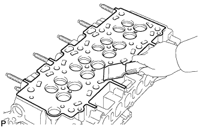 |
Using a gasket scraper, remove all the gasket material from the cylinder block contact surface.
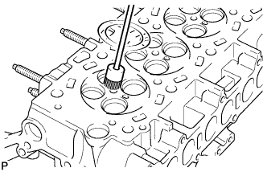 |
Using a wire brush, remove all the carbon from the combustion chambers.
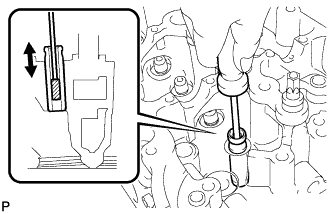 |
Using a valve guide bushing brush and solvent, clean all the valve guide bushes.
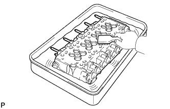 |
Using a soft brush and solvent, thoroughly clean the cylinder head.
| 2. INSPECT CYLINDER HEAD SUB-ASSEMBLY |
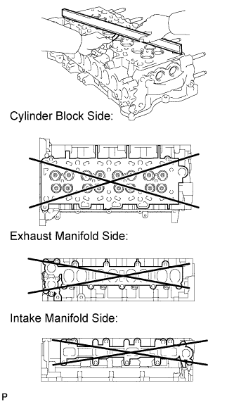 |
Using a precision straightedge and feeler gauge, measure the warpage of the contact surface between the cylinder head and cylinder block, and the cylinder head and manifolds.
| Item | Specified Condition |
| Cylinder block side | 0 to 0.05 mm (0 to 0.00197 in.) |
| Intake manifold side | 0 to 0.08 mm (0 to 0.00315 in.) |
| Exhaust manifold side | 0 to 0.08 mm (0 to 0.00315 in.) |
| Item | Specified Condition |
| Cylinder block side | 0.05 mm (0.00197 in.) |
| Intake manifold side | 0.08 mm (0.00315 in.) |
| Exhaust manifold side | 0.08 mm (0.00315 in.) |
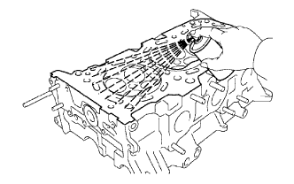 |
Using a dye penetrant, check the intake ports, exhaust ports and cylinder surface for cracks.
If there are cracks, replace the cylinder head sub-assembly.
| 3. INSPECT CYLINDER HEAD BOLT |
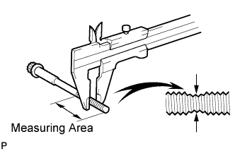 |
Using a vernier caliper, measure the outside thread diameter of the bolt.
| 4. INSPECT NO. 2 AND NO. 3 CAMSHAFT THRUST CLEARANCE (for Intake Camshaft) |
Install the No. 2 and No. 5 camshaft bearing caps to the cylinder head.
Place the camshafts on the cylinder head.
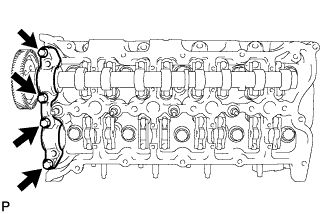 |
Temporarily install the No. 1 and No. 4 camshaft bearing caps with the 4 bolts by hand.
Install the No. 3 camshaft bearing caps.
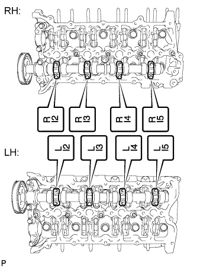 |
Confirm the marks and numbers on the camshaft bearing caps and place them in their proper position and direction.
Temporarily install the 16 bolts.
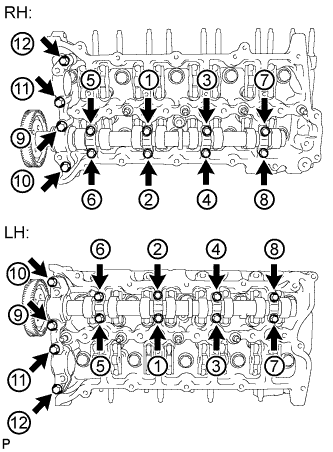 |
Uniformly tighten the 24 bolts in several steps in the order shown in the illustration.
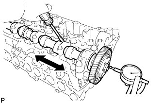 |
Using a dial indicator, measure the thrust clearance while moving the camshaft back and forth.
| 5. INSPECT NO. 1 AND NO. 4 CAMSHAFT THRUST CLEARANCE (for Exhaust Camshaft) |
Install the No. 2 and No. 5 camshaft bearing caps to the cylinder head.
Place the camshafts on the cylinder head.
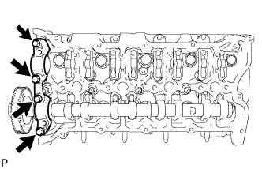 |
Temporarily install the No. 1 and No. 4 camshaft bearing caps with the 4 bolts by hand.
Install the No. 3 camshaft bearing caps.
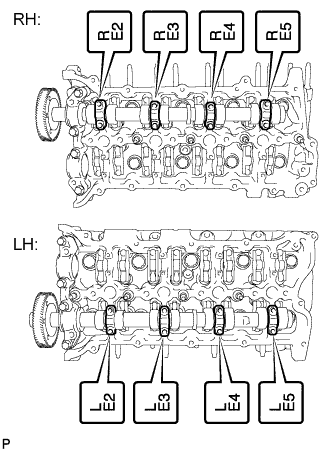 |
Confirm the marks and numbers on the camshaft bearing caps and place them in their proper position and direction.
Temporarily install the 16 bolts.
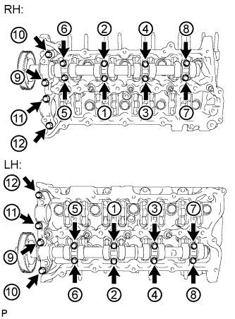 |
Uniformly tighten the 24 bolts in several steps in the order shown in the illustration.
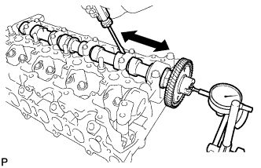 |
Using a dial indicator, measure the thrust clearance while moving the camshaft back and forth.
| 6. INSPECT CAMSHAFT |
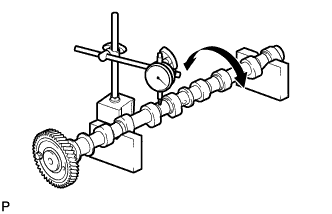 |
Inspect the camshaft for runout.
Place the camshaft on V-blocks.
Using a dial indicator, measure the runout at the center journal.
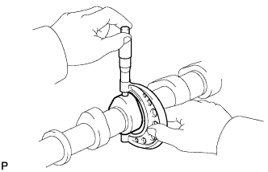 |
Inspect the cam lobe height.
Using a micrometer, measure the cam lobe height.
| Item | Specified Condition |
| No. 2 and No. 3 camshaft (intake) | 37.277 to 37.387 mm (1.468 to 1.472 in.) |
| No. 1 and No. 4 camshaft (exhaust) | 38.324 to 38.434 mm (1.509 to 1.513 in.) |
| Item | Specified Condition |
| No. 2 and No. 3 camshaft (intake) | 37.277 mm (1.468 in.) |
| No. 1 and No. 4 camshaft (exhaust) | 38.324 mm (1.509 in.) |
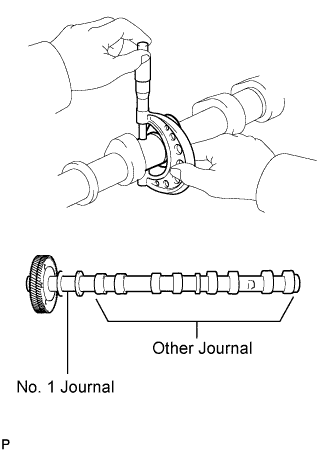 |
Inspect the camshaft journal diameter.
Using a micrometer, measure the journal diameter.
| Item | Specified Condition |
| No. 1 journal | 29.969 to 29.985 mm (1.180 to 1.181 in.) |
| Other journal | 26.969 to 26.985 mm (1.0618 to 1.0624 in.) |
| 7. INSPECT CAMSHAFT OIL CLEARANCE |
Clean the camshaft bearing caps and camshaft journals.
Place the camshafts on the cylinder head.
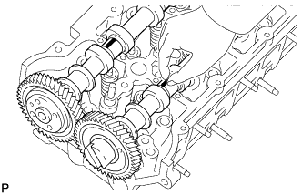 |
Lay a strip of Plastigage across each of the camshaft journals.
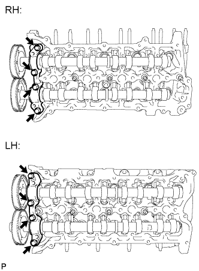 |
Temporarily install the camshaft bearing cap with the 4 bolts by hand.
Install the No. 3 camshaft bearing caps with the 16 bolts.
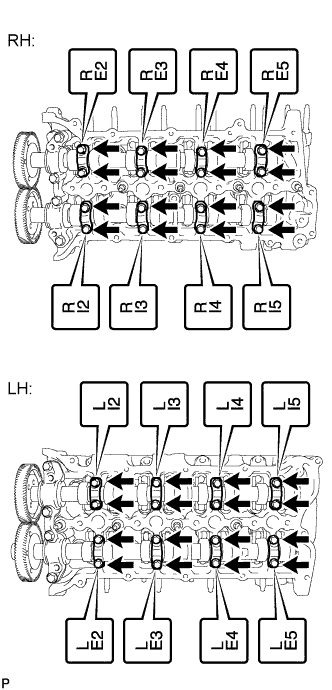 |
Confirm the marks and numbers on the camshaft bearing caps and place them in their proper position and direction.
Temporarily install the 16 bolts.
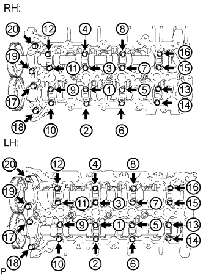 |
Uniformly tighten the 20 bolts in several steps in the order shown in the illustration.
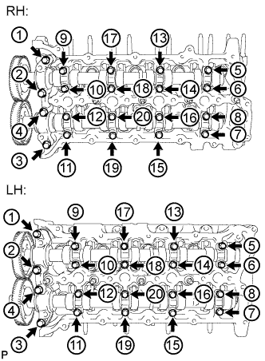 |
Uniformly loosen and remove the 20 bolts in the sequence shown in the illustration.
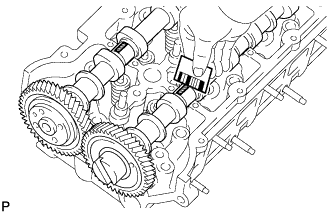 |
Measure the Plastigage at its widest point.
Remove the Plastigage completely.
Remove the camshafts.
| 8. INSPECT VALVE ROCKER ARM SUB-ASSEMBLY |
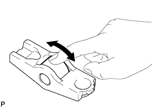 |
Turn the roller by hand to check that it turns smoothly.
If the roller does not turn smoothly, replace the valve rocker arm.
| 9. INSPECT VALVE LASH ADJUSTER ASSEMBLY |
Place the lash adjuster into a container full of new engine oil.
Insert SST tip into the lash adjuster plunger and use the tip to press down on the check ball inside the plunger.
Squeeze SST and the lash adjuster together to move the plunger up and down 5 to 6 times.
Check the movement of the plunger and bleed air.
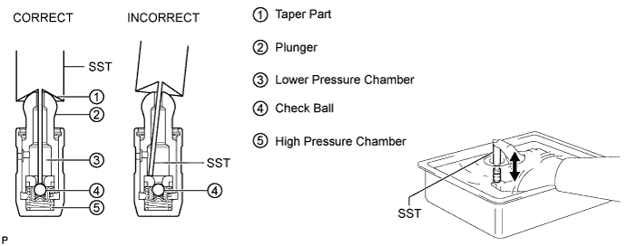
After bleeding the air, remove SST. Then try to quickly and firmly press the plunger with your fingers.
| 10. INSPECT INNER COMPRESSION SPRING |
Inspect the inner compression spring deviation.
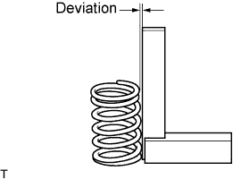 |
Using a steel square, measure the deviation of the inner compression spring.
Inspect the inner compression spring free length.
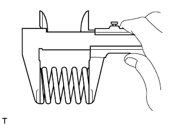 |
Using a vernier caliper, measure the free length of the inner compression spring.
Inspect the inner compression spring tension.
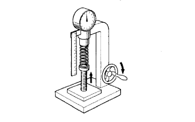 |
Using a spring tester, measure the tension of the inner compression spring at the specified installed length.
| 11. INSPECT VALVE GUIDE BUSH OIL CLEARANCE |
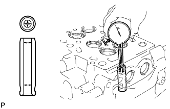 |
Using a caliper gauge, measure the inside diameter of the guide bush.
Subtract the valve stem diameter measurement from the guide bush inside diameter measurement.
| Item | Specified Condition |
| Intake | 0.025 to 0.060 mm (0.000984 to 0.00236 in.) |
| Exhaust | 0.035 to 0.070 mm (0.00138 to 0.00276 in.) |
| Item | Specified Condition |
| Intake | 0.120 mm (0.00472 in.) |
| Exhaust | 0.130 mm (0.00512 in.) |
| 12. CLEAN VALVE |
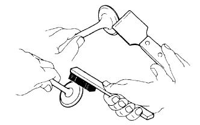 |
Using a gasket scraper, chip off any carbon from the valve head.
Using a wire brush, thoroughly clean the valve.
| 13. INSPECT VALVE |
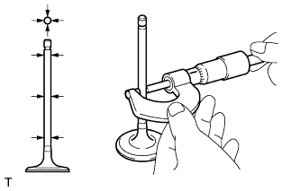 |
Inspect the valve stem diameter.
Using a micrometer, measure the diameter of the valve stem.
| Item | Specified Condition |
| Intake | 5.970 to 5.985 mm (0.2350 to 0.2356 in.) |
| Exhaust | 5.960 to 5.975 mm (0.2346 to 0.2352 in.) |
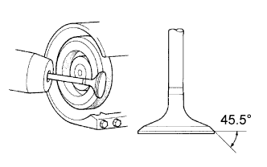 |
Inspect the valve face angle.
Grind the valve enough to remove pits and carbon.
Check that the valve is ground to the correct valve face angle.
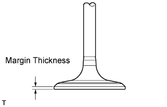 |
Inspect the valve head margin thickness.
Using a vernier caliper, measure the valve head margin thickness.
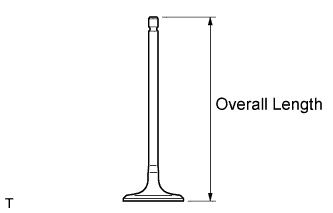 |
Inspect the valve overall length.
Using a vernier caliper, measure the overall length.
| Item | Specified Condition |
| Intake | 104.4 mm (4.11 in.) |
| Exhaust | 104.1 mm (4.10 in.) |
| Item | Specified Condition |
| Intake | 104.1 mm (4.10 in.) |
| Exhaust | 103.8 mm (4.09 in.) |
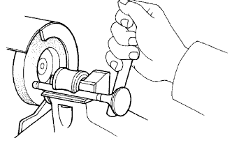 |
Inspect the valve stem tip.
Check the surface of the valve stem tip for wear.
| 14. CLEAN VALVE SEAT |
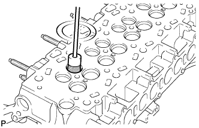 |
Using a 45° carbide cutter, resurface the valve seats.
Clean the valve seats.
| 15. INSPECT INTAKE VALVE SEAT |
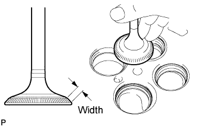 |
Apply a light coat of Prussian blue to the valve face.
Lightly press the valve face against the valve seat.
Check the valve face and valve seat.
Check that the contact surfaces of the valve seat and valve face are in the middle area of their respective surfaces, with the width between 1.0 to 1.4 mm (0.0394 to 0.0551 in.).
If not, correct the valve seat.
Check that the contact surfaces of the valve seat and valve face are even around the entire valve seat.
If not, correct the valve seat.
| 16. INSPECT EXHAUST VALVE SEAT |
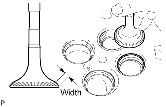 |
Apply a light coat of Prussian blue to the valve face.
Lightly press the valve face against the valve seat.
Check the valve face and valve seat.
Check that the contact surfaces of the valve seat and valve face are in the middle area of their respective surfaces, with the width between 1.0 to 1.4 mm (0.0394 to 0.0551 in.).
If not, correct the valve seat.
Check that the contact surfaces of the valve seat and valve face are even around the entire valve seat.
If not, correct the valve seat.
| 17. VISUALLY CHECK CYLINDER BLOCK |
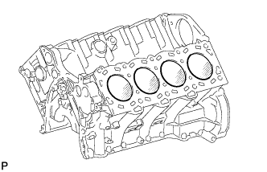 |
Visually check the cylinder for vertical scratches.
If deep scratches are present, rebore all 8 cylinders. If necessary, replace the cylinder block sub-assembly.
| 18. INSPECT CYLINDER BLOCK FOR FLATNESS |
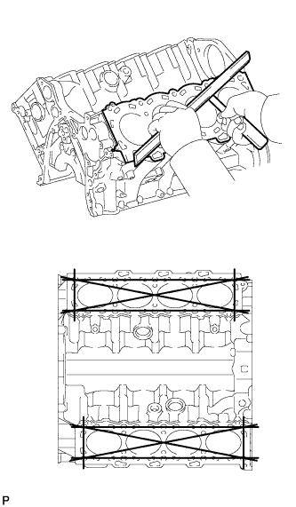 |
Using a precision straightedge and feeler gauge, measure the warpage of the contact surface between the cylinder head and cylinder head gaskets.
| 19. INSPECT CONNECTING ROD BOLT |
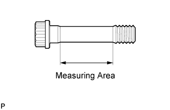 |
Using a vernier caliper, measure the tension portion diameter of the bolt.
| 20. INSPECT CRANKSHAFT BEARING CAP BOLT |
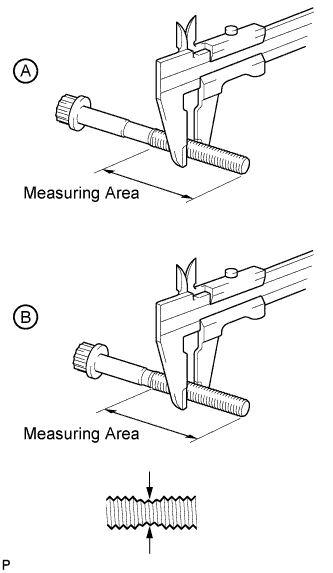 |
Using a vernier caliper, measure the outside thread diameter of bolt A and B.
| Item | Specified Condition |
| Bolt A | 106 mm (4.17 in.) |
| Bolt B | 90.5 mm (3.56 in.) |
| Item | Specified Condition |
| Bolt A | 73 mm (2.87 in.) |
| Bolt B | 63 mm (2.48 in.) |
| 21. INSPECT PISTON WITH PIN SUB-ASSEMBLY |
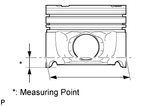 |
Using a micrometer, measure the piston diameter at a right angle to the piston pin center line, 12 mm (0.472 in.) from the piston skirt.
| 22. INSPECT CYLINDER BORE |
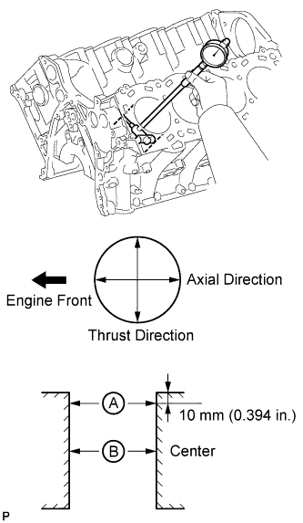 |
Using a cylinder gauge, measure the cylinder bore diameter at positions A and B in the thrust and axial directions.
| 23. INSPECT PISTON OIL CLEARANCE |
Subtract the piston diameter measurement from the cylinder bore diameter measurement.
| 24. INSPECT PISTON PIN OIL CLEARANCE |
Check each mark on the piston, piston pin and connecting rod.
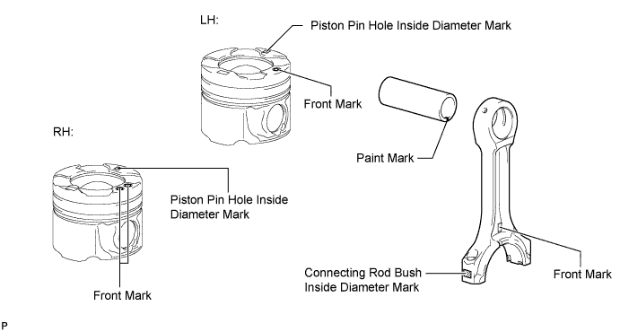
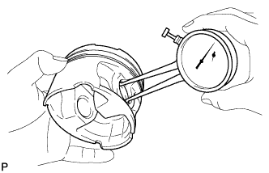 |
Using a caliper gauge, measure the inside diameter of the piston pin hole.
| Mark | Specified Condition |
| A | 29.009 to 29.013 mm (1.1421 to 1.1422 in.) |
| B | 29.013 to 29.017 mm (1.1422 to 1.1424 in.) |
| C | 29.017 to 29.021 mm (1.1424 to 1.1426 in.) |
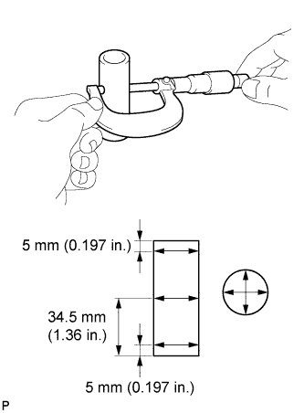 |
Using a micrometer, measure the piston pin diameter.
| Mark | Paint Color | Specified Condition |
| A | White | 29.000 to 29.004 mm (1.1417 to 1.1419 in.) |
| B | Pink | 29.004 to 29.008 mm (1.1419 to 1.1420 in.) |
| C | Blue | 29.008 to 29.012 mm (1.1420 to 1.1422 in.) |
Subtract the piston pin diameter measurement from the piston pin hole diameter measurement.
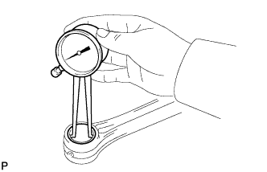 |
Using a caliper gauge, measure the inside diameter of the connecting rod bush.
| Mark | Specified Condition |
| A | 29.019 to 29.023 mm (1.1425 to 1.1426 in.) |
| B | 29.023 to 29.027 mm (1.1426 to 1.1428 in.) |
| C | 29.027 to 29.031 mm (1.1428 to 1.1430 in.) |
Subtract the piston pin diameter measurement from the bush inside diameter measurement.
| 25. INSPECT RING GROOVE CLEARANCE |
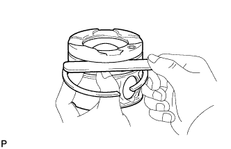 |
Using a feeler gauge, measure the clearance between a new piston ring and the wall of the ring groove.
| Item | Specified Condition |
| No. 1 compression ring | 0.11 to 0.15 mm (0.00433 to 0.00591 in.) |
| No. 2 compression ring | 0.08 to 0.12 mm (0.00315 to 0.00472 in.) |
| Oil ring | 0.03 to 0.07 mm (0.00118 to 0.00276 in.) |
| 26. INSPECT PISTON RING END GAP |
Insert the piston ring into the cylinder bore.
Using a piston, push the piston ring a little beyond the bottom of the ring travel, 60 mm (2.36 in.) from the top of the cylinder block.
Using a feeler gauge, measure the end gap.
| Item | Type of Engine | Specified Condition |
| No. 1 compression ring | w/ EGR System | 0.22 to 0.32 mm (0.00866 to 0.0126 in.) |
| w/o EGR System | 0.20 to 0.30 mm (0.00787 to 0.0118 in.) | |
| No. 2 compression ring | - | 0.47 to 0.62 mm (0.0185 to 0.0244 in.) |
| Oil ring | - | 0.10 to 0.40 mm (0.00394 to 0.0157 in.) |
| Item | Specified Condition |
| No. 1 compression ring | 0.40 mm (0.0157 in.) |
| No. 2 compression ring | 0.75 mm (0.0295 in.) |
| Oil ring | 0.50 mm (0.0197 in.) |
| 27. INSPECT CONNECTING ROD SUB-ASSEMBLY |
Using a rod aligner and feeler gauge, check the connecting rod alignment.
Check for bend.
Check for twist.
| 28. INSPECT CRANKSHAFT |
Using a dial indicator and V-blocks, measure the runout as shown in the illustration.
Using a micrometer, measure the diameter of each main journal.
Check each main journal for taper and out-of-round as shown in the illustration.
Using a micrometer, measure the diameter of each crank pin.
Check each crank pin for taper and out-of-round as shown in the illustration.
| 29. INSPECT CRANKSHAFT THRUST CLEARANCE |
Using a dial indicator, measure the thrust clearance while prying the crankshaft back and forth with a screwdriver.
| 30. INSPECT CRANKSHAFT OIL CLEARANCE |
| Item | Specified Condition |
| No. 1 and 5 journal bearings | 22.5 mm (0.886 in.) |
| No. 2, 3 and 4 journal bearings | 20.5 mm (0.807 in.) |
Clean each main journal and bearing.
Align the bearing claw with the claw groove of the cylinder block, and push in the 5 upper bearings.
Align the bearing claw with the claw groove of the main bearing cap, and push in the 5 lower bearings.
Place the crankshaft on the cylinder block.
Lay a strip of Plastigage across each journal.
Examine the front marks and numbers and install the crankshaft bearing caps to the cylinder block.
Apply a light coat of engine oil to the threads of the crankshaft bearing cap bolts.
Temporarily install the crankshaft bearing cap bolts labeled A or the bolts labeled B.
Uniformly tighten the 2 crankshaft bearing cap bolts for each bearing cap in several passes to ensure a proper fit.
Remove the crankshaft bearing cap bolts and spacers.
Set the 2 cylinder block stiffening plates on the cylinder block.
Step 1:
Apply a light coat of engine oil to the threads and under the heads of the 20 crankshaft bearing cap bolts.
Install the 20 crankshaft bearing cap bolts. Using several steps, tighten the bolts uniformly in the sequence shown in the illustration.
Step 2:
Mark the front side of the crankshaft bearing cap bolts A and B with paint.
Tighten the crankshaft bearing cap bolts A and B 90° in the sequence shown in the illustration.
Step 3:
Tighten the crankshaft bearing cap bolts A another 90° in the sequence shown in the illustration.
Check that the painted marks of bolts A are now at a 180° angle to the front.
Check that the painted marks of bolts B are now at a 90° angle to the front.
Step 4:
Using several steps, install the 10 crankshaft bearing cap bolts uniformly in the sequence shown in the illustration.
Remove the crankshaft bearing caps.
Step 1:
Using several steps, loosen and remove the 10 crankshaft bearing cap set bolts uniformly in the sequence shown in the illustration.
Step 2:
Using several steps, loosen and remove the 20 crankshaft bearing cap set bolts uniformly in the sequence shown in the illustration.
Remove the 2 cylinder block stiffening plates.
Using 2 crankshaft bearing cap set bolts, pull out the 5 bearing caps.
Measure the Plastigage at its widest point.
| Item | Specified Condition |
| No. 1 and 3 journals | 0.020 to 0.038 mm (0.000787 to 0.00150 in.) |
| No. 2, 4 and 5 journals | 0.032 to 0.050 mm (0.00126 to 0.00197 in.) |
| Item | Specified Condition |
| No. 1 and 3 journals | 0.048 mm (0.00189 in.) |
| No. 2, 4 and 5 journals | 0.060 mm (0.00236 in.) |
| Item | Specified Condition |
| No. 1 and 3 journals | 0.021 to 0.061 mm (0.000827 to 0.00240 in.) |
| No. 2, 4 and 5 journals | 0.033 to 0.073 mm (0.00130 to 0.00287 in.) |
Completely remove the Plastigage.
If replacing a bearing, replace it with one that has the same number. If the number of the bearing cannot be determined, select the correct bearing by adding together the numbers imprinted on the cylinder block and crankshaft, then refer to the appropriate bearing number. There are 7 sizes of standard bearings, marked "1", "2", "3", "4", "5", "6" and "7" accordingly.
EXAMPLE
Cylinder block main journal bore diameter "1" (A) + Crankshaft main journal diameter "2" (B) = Total number 3 (use bearing "3" (C))
| Cylinder Block (A) | Crankshaft (B) | Use Bearing (C) |
| "1" | "0" | "1" |
| "1" | "2" | |
| "2" | "3" | |
| "3" | "4" | |
| "4" | "5" | |
| "2" | "0" | "2" |
| "1" | "3" | |
| "2" | "4" | |
| "3" | "5" | |
| "4" | "6" | |
| "3" | "0" | "3" |
| "1" | "4" | |
| "2" | "5" | |
| "3" | "6" | |
| "4" | "7" |
| Item | Mark | Specified Condition |
| No. 1 and 3 journals | "1" | 79.000 to 79.006 mm (3.11023 to 3.11047 in.) |
| "2" | More than 79.006 to 79.012 mm (more than 3.11047 to 3.11070 in.) | |
| "3" | More than 79.012 to 79.018 mm (more than 3.11070 to 3.11094 in.) | |
| No. 2, 4 and 5 journals | "1" | 79.000 to 79.006 mm (3.11023 to 3.11047 in.) |
| "2" | More than 79.006 to 79.012 mm (more than 3.11047 to 3.11070 in.) | |
| "3" | More than 79.012 to 79.018 mm (more than 3.11070 to 3.11094 in.) |
| Item | Mark | Specified Condition |
| No. 1 and 3 journals | "2" | More than 74.994 to 75.000 mm (more than 2.95251 to 2.95275 in.) |
| "3" | More than 74.988 to 74.994 mm (more than 2.95228 to 2.95251 in.) | |
| "4" | 74.982 to 74.988 mm (2.95204 to 2.95228 in.) | |
| No. 2, 4 and 5 journals | "0" | More than 74.994 to 75.000 mm (more than 2.95251 to 2.95275 in.) |
| "1" | More than 74.988 to 74.994 mm (more than 2.95288 to 2.95251 in.) | |
| "2" | 74.982 to 74.988 mm (2.95204 to 2.95228 in.) |
| Item | Mark | Specified Condition (for Upper Bearing) | Specified Condition (for Lower Bearing) |
| No. 1 and 5 journal bearings | "1" | More than 1.987 to 1.990 mm (more than 0.07823 to 0.07835 in.) | More than 1.975 to 1.978 mm (more than 0.07776 to 0.07787 in.) |
| "2" | More than 1.990 to 1.993 mm (more than 0.07835 to 0.07846 in.) | More than 1.978 to 1.981 mm (more than 0.07787 to 0.07799 in.) | |
| "3" | More than 1.993 to 1.996 mm (more than 0.07846 to 0.07858 in.) | More than 1.981 to 1.984 mm (more than 0.07799 to 0.07811 in.) | |
| "4" | More than 1.996 to 1.999 mm (more than 0.07858 to 0.07870 in.) | More than 1.984 to 1.987 mm (more than 0.07811 to 0.07823 in.) | |
| "5" | More than 1.999 to 2.002 mm (more than 0.07870 to 0.07882 in.) | More than 1.987 to 1.990 mm (more than 0.07823 to 0.07835 in.) | |
| "6" | More than 2.002 to 2.005 mm (more than 0.07882 to 0.07894 in.) | More than 1.990 to 1.993 mm (more than 0.07835 to 0.07846 in.) | |
| "7" | More than 2.005 to 2.008 mm (more than 0.07894 to 0.07905 in.) | More than 1.993 to 1.996 mm (more than 0.07846 to 0.07858 in.) | |
| No. 2, 3 and 5 journal bearings | "1" | More than 1.975 to 1.978 mm (more than 0.07776 to 0.07787 in.) | More than 1.987 to 1.990 mm (more than 0.07823 to 0.07835 in.) |
| "2" | More than 1.978 to 1.981 mm (more than 0.07787 to 0.07799 in.) | More than 1.990 to 1.993 mm (more than 0.07835 to 0.07846 in.) | |
| "3" | More than 1.981 to 1.984 mm (more than 0.07799 to 0.07811 in.) | More than 1.993 to 1.996 mm (more than 0.07846 to 0.07858 in.) | |
| "4" | More than 1.984 to 1.987 mm (more than 0.07811 to 0.07823 in.) | More than 1.996 to 1.999 mm (more than 0.07858 to 0.07870 in.) | |
| "5" | More than 1.987 to 1.990 mm (more than 0.07823 to 0.07835 in.) | More than 1.999 to 2.002 mm (more than 0.07870 to 0.07882 in.) | |
| "6" | More than 1.990 to 1.993 mm (more than 0.07835 to 0.07846 in.) | More than 2.002 to 2.005 mm (more than 0.07882 to 0.07894 in.) | |
| "7" | More than 1.993 to 1.996 mm (more than 0.07846 to 0.07858 in.) | More than 2.005 to 2.008 mm (more than 0.07894 to 0.07905 in.) |
| 31. INSPECT CONNECTING ROD THRUST CLEARANCE |
Using a dial indicator, measure the thrust clearance while moving the connecting rod back and forth.
| 32. INSPECT CONNECTING ROD OIL CLEARANCE |
Install the crankshaft bearing (Click here).
Install the crankshaft (Click here).
Lay a strip of Plastigage across the crank pin.
Install the connecting rod cap so that its protrusion is facing the correct direction.
Apply a light coat of engine oil to the threads of the connecting rod cap bolts.
Step 1:
Install and alternately tighten the bolts of the connecting rod cap in several steps.
Step 2:
Mark the front side of each connecting rod cap bolt with paint.
Tighten the bearing cap bolts in step 1 90°.
Remove the 2 bolts, connecting rod cap and lower bearing.
Measure the Plastigage at its widest point.
Completely remove the Plastigage.
If replacing a bearing, replace it with one that has the same number marked on the connecting rod. There are 5 sizes of standard bearings, marked "1 ", "2", "3", "4" and "5" accordingly.
Select the correct bearing by adding together the number marks imprinted on the connecting rod and crankshaft.
EXAMPLE
Connecting rod "1" (A) + Crank pin "2" (B) = Total number 3 (use bearing "3" (C))
| Mark | Specified Condition |
| "1" | 58.000 to 58.006 mm (2.28346 to 2.28370 in.) |
| "2" | More than 58.006 to 58.012 mm (more than 2.28370 to 2.28393 in.) |
| "3" | More than 58.012 to 58.018 mm (more than 2.28393 to 2.28417 in.) |
| Mark | Specified Condition |
| "0" | More than 54.994 to 55.000 mm (more than 2.16511 to 2.16535 in.) |
| "1" | More than 54.988 to 54.994 mm (more than 2.16488 to 2.16511 in.) |
| "2" | 54.982 to 54.988 mm (2.16464 to 2.16488 in.) |
| Mark | Specified Condition |
| "1" | More than 1.485 to 1.488 mm (more than 0.05846 to 0.05858 in.) |
| "2" | More than 1.488 to 1.491 mm (more than 0.05858 to 0.05870 in.) |
| "3" | More than 1.491 to 1.494 mm (more than 0.05870 to 0.05882 in.) |
| "4" | More than 1.494 to 1.497 mm (more than 0.05882 to 0.05894 in.) |
| "5" | More than 1.497 to 1.500 mm (more than 0.05894 to 0.05910 in.) |
Remove the crankshaft (Click here).
Remove the crankshaft bearing.
| 33. INSPECT NO. 1 CHAIN |
Using a spring scale, pull the No. 1 chain with a force of 147 N (15 kgf, 33.1 lbf) and measure the length of the No. 1 chain using a vernier caliper.
| 34. INSPECT NO. 2 CHAIN |
Using a spring scale, pull the No. 2 chain with a force of 147 N (15 kgf, 33.1 lbf) and measure the length of the No. 2 chain using a vernier caliper.
| 35. INSPECT FUEL SUPPLY PUMP SHAFT SPROCKET |
Wrap the No. 1 chain around the sprocket place for the No. 1 chain.
Using a vernier caliper, measure the sprocket with the chain.
Wrap the No. 2 chain around the sprocket place for the No. 2 chain.
Using a vernier caliper, measure the sprocket with the No. 2 chain.
| 36. INSPECT NO. 1 CAMSHAFT TIMING SPROCKET |
Wrap the No. 1 chain around the sprocket.
Using a vernier caliper, measure the No. 1 camshaft timing sprocket diameter with the No. 1 chain.
| 37. INSPECT NO. 2 CAMSHAFT TIMING SPROCKET |
Wrap the No. 2 chain around the sprocket.
Using a vernier caliper, measure the No. 2 camshaft timing sprocket diameter with the No. 2 chain.
| 38. INSPECT NO. 1 IDLE GEAR SHAFT OIL CLEARANCE |
Using a micrometer, measure the No. 1 idle gear shaft diameter.
Using a caliper gauge, measure the inside diameter of the idle gear.
Subtract the No. 1 idle gear shaft diameter measurement from the idle gear inside diameter measurement.
| 39. INSPECT NO. 1 CHAIN TENSIONER ASSEMBLY |
Move the stopper plate clockwise to release the lock. Push the plunger and check that it moves smoothly.
If necessary, replace the No. 1 chain tensioner assembly.
| 40. INSPECT NO. 2 CHAIN TENSIONER ASSEMBLY |
Move the stopper plate clockwise to release the lock. Push the plunger and check that it moves smoothly.
If necessary, replace the No. 2 chain tensioner assembly.
| 41. INSPECT NO. 1 CHAIN TENSIONER SLIPPER |
Measure the worn depth of the No. 1 chain tensioner slipper.
| 42. INSPECT NO. 2 CHAIN TENSIONER SLIPPER |
Measure the worn depth of the No. 2 chain tensioner slipper.
| 43. INSPECT NO. 1 CHAIN VIBRATION DAMPER |
Measure the worn depth of the No. 1 chain vibration damper.
| 44. INSPECT NO. 2 CHAIN VIBRATION DAMPER |
Measure the worn depth of the No. 2 chain vibration damper.
| 45. INSPECT NO. 1 OIL NOZZLE SUB-ASSEMBLY |
Push the check valve with a pin to check if it is stuck.
If stuck, replace the No. 1 oil nozzle sub-assembly.
Push the check valve with a pin to check if it moves smoothly.
While covering A, apply air into B. Check that air does not leak through C. Perform the check again while covering B and applying air into A.
If air leaks, clean or replace the No. 1 oil nozzle sub-assembly.
Push the check valve while covering A, and apply air into B. Check that air passes through C. Perform the check again while covering B, pushing the check valve and applying air into A.
If air does not pass through C, clean or replace the No. 1 oil nozzle sub-assembly.
| 46. INSPECT NO. 1 INTAKE MANIFOLD FOR FLATNESS |
Using a precision straightedge and feeler gauge, measure the warpage of the contact surface between the No. 1 and No. 3 intake manifold, and the No. 1 intake manifold and cylinder head.
| Item | Specified Condition |
| No. 3 intake manifold | 0.10 mm (0.00394 in.) |
| Cylinder head | 0.10 mm (0.00394 in.) |
| 47. INSPECT NO. 2 INTAKE MANIFOLD FOR FLATNESS |
Using a precision straightedge and feeler gauge, measure the warpage of the contact surface between the No. 2 and No. 3 intake manifold, and the No. 2 intake manifold and cylinder head.
| Item | Specified Condition |
| No. 3 intake manifold | 0.10 mm (0.00394 in.) |
| Cylinder head | 0.10 mm (0.00394 in.) |
| 48. INSPECT NO. 3 INTAKE MANIFOLD FOR FLATNESS |
Using a precision straightedge and feeler gauge, measure the warpage of the contact surface between the No. 3 and No. 1 intake manifold, the No. 3 and No. 2 intake manifold, and the No. 3 intake manifold and intake pipe.
| Item | Specified Condition |
| Intake pipe | 0.10 mm (0.00394 in.) |
| No. 2 and No. 3 intake manifold | 0.15 mm (0.00591 in.) |
| 49. INSPECT EXHAUST MANIFOLD FOR FLATNESS |
Using a precision straightedge and feeler gauge, measure the warpage of the contact surface between the exhaust manifold and cylinder head.